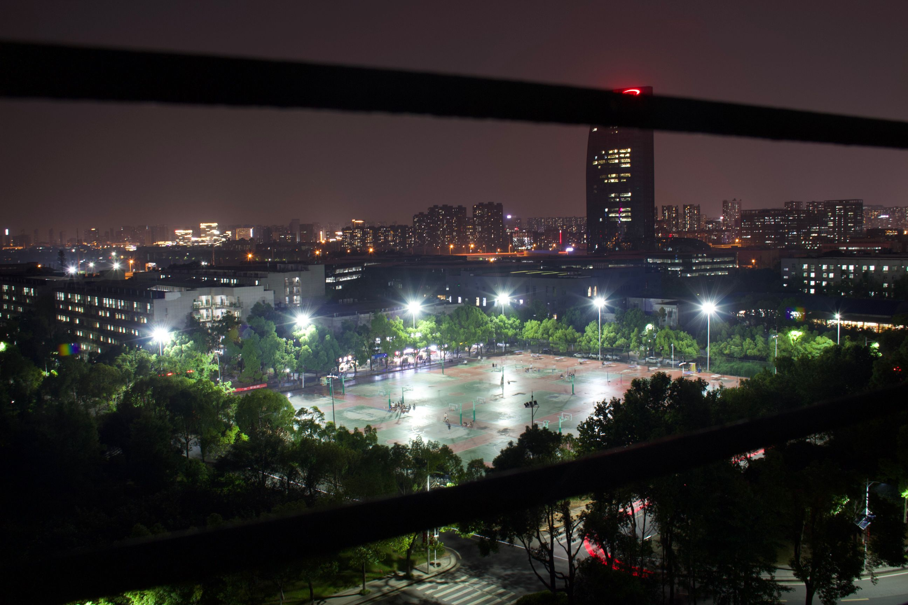

<!-- carousel.html -->

<div id="carousel-container">
    
    
    
    
</div>
<div id="prev-button">&lt;</div>
<div id="next-button">&gt;</div>

<style>
    #carousel-container {
        width: 1300px;
        height: 300px;
        overflow: hidden;
        position: relative;
    }

    #carousel-container img {
        width: 1300px;
        height: 300px;
        display: block;
        position: absolute;
        top: 0;
        left: 0;
        transition: transform 0.5s ease;
    }

    #carousel-container img:not(:first-child) {
        left: 100%;
    }

    #prev-button,
    #next-button {
        position: absolute;
        top: 50%;
        transform: translateY(-50%);
        cursor: pointer;
        font-size: 24px;
        color: white;
        background-color: rgba(0, 0, 0, 0.5);
        width: 40px;
        height: 40px;
        line-height: 40px;
        text-align: center;
    }

    #prev-button {
        left: 10px;
    }

    #next-button {
        right: 10px;
    }
</style>

<script src="js/lunbo.js">
    
</script>